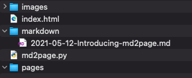

Create a new repository
Copy or upload all the items in your folder
Go to "Settings -> Pages", choose Branch and Source Folder, click Save

Wait a few seconds, refresh the page, until you see below message

Your personal website is live!
The purpose to create md2page was to find a simplest way to host a personal website. There are some existing site generators, like Jekyll and Material for MkDocs, but I think they're not simple enough.
I used to take note using MicroSoft OneNote, which was easy to use and powerful. But I found the problem when my subscription expired and wanted to transfer all my notes to another platform. It was not easy, as OneNote has its own format. So I decided to use Markdown to take note, which I can store the notes anywhere without platform limitation.
Futher more, I want to share my notes in my personal blog, as I don't need any fancy themes, just the simplest personal website, I chose Github page and tried Jekyll and Material for MkDocs to transform my markdown notes into html pages. Aftr playing with these two tools for a while, I decided to create my own tool to generate personal pages.
Create a folder with any name you like, or just fork this git
Make sure the folder has following items

Place your markdown notes in "markdown" folder, the file name should use following format:
yyyy-mm-dd-title.md
Execute md2page.py in command line
Python
python3 md2page.py
You html pages are ready, just click "index.html", your notes are linked
Create a new repository
Copy or upload all the items in your folder
Go to "Settings -> Pages", choose Branch and Source Folder, click Save
Wait a few seconds, refresh the page, until you see below message
Your personal website is live!
Create new markdown files in markdown folder
Execute md2page.py in command line
Python
python3 md2page.py
Synchronise with github repository